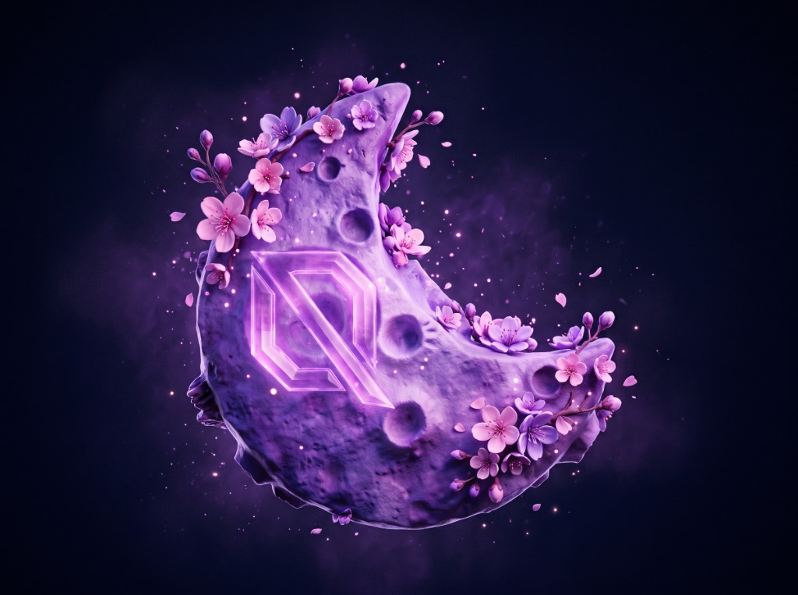

Скачать v2.4Премиальный Zero-Lag оверлей в стиле Sakura Bloom. Кастомные прицелы, подсветка теней Black Equalizer, честный игровой FPS, хитсаунды выстрелов и макросы без инжектов в память игры.
Каждый модуль оптимизирован под нативную скорость Windows API без просадок FPS.
8 типов перекрестий, тонкая настройка зазора, цвета и толщины обводки. Свободное перемещение всех оверлеев по осям X/Y с пиксельной точностью.
Умное высветление тёмных углов на картах Sandstone и Province через аппаратную гамму монитора. Враги заметны издалека даже в глубоких тенях.
Прямой опрос системного буфера SurfaceFlinger эмулятора BlueStacks с наносекундной точностью, плюс температура и реальная загрузка процессора.
Сочный и плотный щелчок при выстреле с настраиваемой миллисекундной задержкой и поддержкой Full-Auto спрея. Звуки воспроизводятся с 0 мс лагов.
Встроенный движок макросов для мгновенного сброса зума AWP Quick-Switch, спама прыжков Duck-Jump и компенсации отдачи при стрельбе с сохранением в .qw.
Клиент рисуется в прозрачном оверлее Windows. Никаких опасных DLL-инжектов в эмулятор BlueStacks или память игры. Античит ничего не видит.
Qwenix Client работает даже на слабых ПК и ноутбуках благодаря оптимизации Win32 API.
Установка не требует специальных навыков и занимает меньше двух минут.
Нажмите кнопку «Скачать» ниже и сохраните архив Qwenix-Client.zip на свой компьютер.
Извлеките файлы в любое удобное место (например, в отдельную папку на Рабочем столе).
Дважды кликните по файлу run.bat. Откроется интерфейс Qwenix Client в стиле Sakura Bloom.
Откройте эмулятор со Standoff 2. Оверлеи сразу появятся поверх экрана! Нажмите F6 для быстрого скрытия/показа.